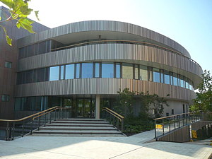

University of Cambridge Department of Chemical Engineering and Biotechnology Adsorption & Advanced Materials Group West Cambridge Site, Philippa Fawcett Drive CB3 0AS, Cambridge, UK
The laboratory is located on the University of Cambridge, Department of Chemical Engineering and Biotechnology in the West Cambridge site. University Map Department of Chemical Engineering and Biotechnology (West Cambridge Site).
If using satnav, the postcode is CB3 0AS. Alternatively
Parking: The car park immediately in front of the Department building (car park 6) is for staff use only. Visitors should drive past the building heading west and park in car park 8. The car parks require an entry code. Visitors should please request an access code from their host a few days in advance of their visit.
The West Cambridge Site is served well by four bus routes. The Universal bus and the X3 (both run by Whippet) come on to the West Cambridge Site. There is no stop directly outside CEB, but stops outside the Institute for Manufacturing (IfM) or the Department of Materials Science & Metallurgy (MSM) are very close by. There is also the Citi 4 and the Madingley Road Park & Ride which is run by Stagecoach.
Cambridge Railway Station is about 3 miles from the New Building. You may take the Universal busfrom the station (around 30 minutes) or a taxi (around 15 minutes).
Cambridge is a compact and flat city, so cycling and walking are quick, cheap and pollution-free methods of travel. The Cambridge Cycle Map is available from Cambridge City Council.